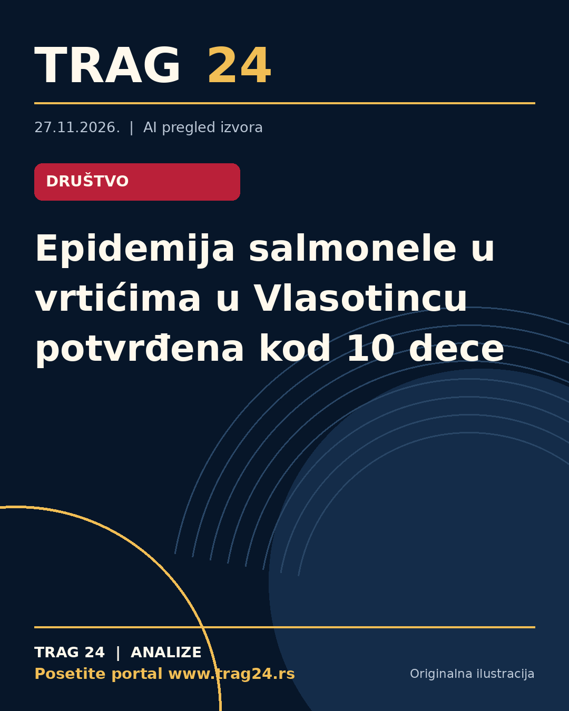

Epidemija salmonele u vrtićima u Vlasotincu potvrđena kod 10 dece

ŠTA SE DOGODILO
U Predškolskoj ustanovi „Milka Dimanić“ u Vlasotincu prijavljena je epidemija salmonele. Do sada je bakterija potvrđena kod 10 dece iz dva vrtića - osam iz vrtića 'Kolibri' i dva iz vrtića 'Dečija radost'. Među zaposlenima nema potvrđenih slučajeva, ali se vrše zdravstveni pregledi. Izvodi se vanredni higijensko-sanitarni nadzor.
HRONOLOGIJA
Epidemija je otkrivena 23. novembra, a zvanično prijavljena 25. novembra. Prvi slučaj salmonele u vrtićima, prema navodima roditelja, otkriven je krajem oktobra, ali su roditelji obavešteni tek 23. novembra. Nakon potvrde slučajeva sprovedena je dezinfekcija objekata, uzeti su brisevi iz centralne kuhinje i dostavnog vozila, i utvrđuje se uzrok epidemije.
ŠTA NAVODE IZVORI
Zavod za javno zdravlje Leskovac i načelnica Centra za kontrolu i prevenciju bolesti Jadranka Krasić ističu da se sprovodi saradnja sa republičkom zdravstvenom, sanitarnom i veterinarskom inspekcijom, kao i da je naložena kontrola stolice za decu koja su pohađala vrtiće. Deca kod kojih se salmonela potvrdi u stolici neće moći da pohađaju vrtić dok se ne završi lečenje. Roditelji izražavaju revolt zbog kašnjenja u informisanju i nedostatka transparentnosti vrtića.
ŠTA JE POTVRĐENO
Potvrđeno je da je desetoro dece zaraženo salmonelom, da nema obolelih zaposlenih, da je sprovedena dezinfekcija i da se istražuje izvor zaraze. Takođe, sproveden je vanredni nadzor i naređene su kontrole zdravstvenog stanja dece. Roditelji su obavešteni o situaciji 23. novembra.
ŠTA NIJE POTVRĐENO
Nije potvrđeno ko je kriv za zakašnelo obaveštavanje roditelja, niti je potvrđen izvor zaraze dok se ne završi sanitarno-higijenski nadzor. Nema zvaničnih izjava o eventualnim propustima rukovodstva vrtića, već su to navodi i nezadovoljstvo roditelja. Nije potvrđeno ni da li je bilo pokušaja zataškavanja.
ŠTA OSTАJE OTVORENO: Ostaje da se utvrdi tačan izvor i način širenja salmonele u vrtićima. Takođe, ostaje otvoreno pitanje odgovornosti u komunikaciji s roditeljima i praksa informisanja u budućnosti, kao i mere koje će biti preduzete da se spreče slični slučajevi.
Izvori
- https://www.danas.rs/vesti/drustvo/salmonela-vlasotince/
- https://n1info.rs/vesti/epidemija-salmonele-u-vrticima-u-vlasotincu-roditelji-revoltirani/
- https://www.juznevesti.com/drustvo/epidemija-salmonele-u-vrticima-u-vlasotincu/
Ova analiza je pripremljena uz pomoć veštačke inteligencije na osnovu javno dostupnih izvora. Navodi izvora nisu nužno nezavisno potvrđeni.